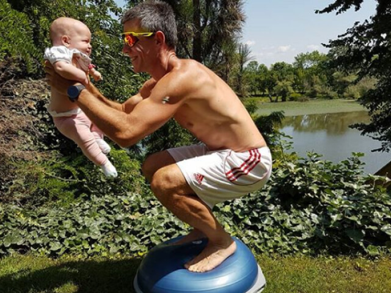
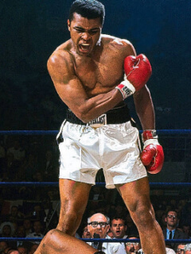
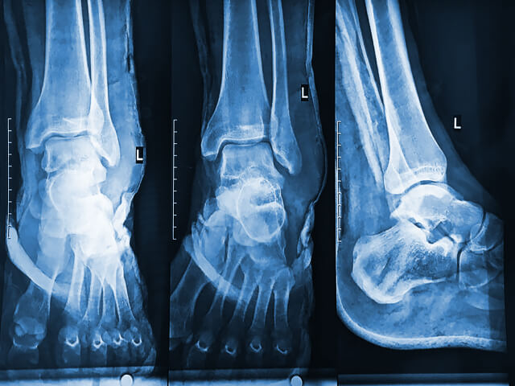
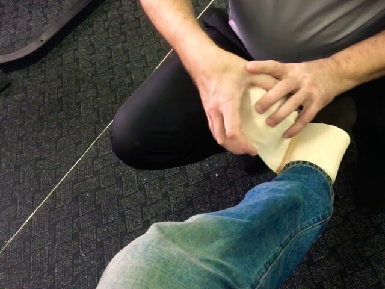
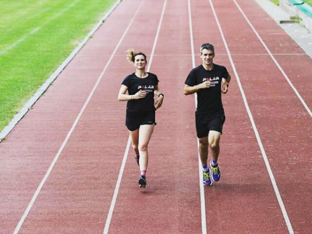

«Μην αφήνετε τον πόνο να σταθεί εμπόδιο στο δρόμο σας για ένα αθλητικό σώμα»
Γεια σε όλους! Επιτρέψτε μου να συστηθώ σε όσους δεν με γνωρίζουν - είμαι ο Νίκος. Ίσως, κάποιοι από εσάς παρακολουθούν το blog μου για το μποξ, αλλά τώρα είναι η πρώτη φορά που μιλήσω για το πώς ξεκίνησαν όλα... Και σχεδόν τελείωσαν μετά τον πρώτο τραυματισμό. Αυτό που με βοήθησε δεν είναι οι γιατροί, είναι ένα προϊόν για το οποίο πρόκειται να μιλήσω παρακάτω.
Ξεκίνησα την πυγμαχία στα 38 και δεν ντρέπομαι γι’ αυτό
Ως παιδί, ασχολήθηκα με πολλά αθλήματα, από αθλητικά στίβου μέχρι ποδόσφαιρο. Οι προπονήσεις με βοήθησαν να οικοδομήσω ένα σωστό σώμα στη ζωή μου. Αλλά όταν μπήκα στο πανεπιστήμιο, η σχέση μου με τον αθλητισμό τελείωσε και έκανα φίλους με κακές συνήθειες. Όταν ήμουν περίπου 30, μπορούσα να δω ήδη ότι η κοιλιά μου μεγάλωνε, αλλά δεν με ένοιαζε. Έπαιρνα βάρος σταδιακά, χωρίς ξαφνικές αλλαγές . Το νούμερο στα ρούχα μου μεγάλωνε.
Όταν ήμουν 38 ετών, αντιμετώπισα οικογενειακά προβλήματα. Η γυναίκα μου έλεγε ότι έπρεπε να πάω στο γυμναστήριο. Το πρόβλημα ήταν προφανές για μένα, αλλά δεν ήξερα από που να ξεκινήσω. Δεν με ενδιέφερε να σηκώνω βάρη επειδή από την παιδική μου ηλικία μου αρέσουν τα αθλήματα που απαιτούν ταχύτητα και συντονισμό. Κατά τη διάρκεια μιας εκδήλωσης του γραφείου, χαλάρωσα πάρα πολύ και μίλησα για όλα αυτά σε ένα συνάδελφό μου. Μου είπε ότι είχε αρχίσει πρόσφατα πυγμαχία και χρειάζονταν έναν αντίπαλο για προπόνηση στην ίδια κατηγορία βάρους.
Είχα ακούσει πολλές ιστορίες για άνδρες που άρχισαν πολεμικές τέχνες ακόμη και στα 50 τους, οπότε δεν δίστασα να συμφωνήσω.
Ο σκληρότερος αγώνας είναι να αγωνίζεται ενάντια στην τεμπελιά σου για την ευτυχία σου!
- Μοχάμεντ Αλί
Διαβάστε περισσότερα
Ένας τυχαίος τραυματισμός στο γόνατο σχεδόν με τελείωσε
Ήμουν ευχαριστημένος με τα πάντα για τους πρώτους 6 μήνες: τα πόδια και τα χέρια μου δυνάμωσαν, έχασα γρήγορα βάρος και ήμουν περήφανος για τον εαυτό μου. Αλλά, όταν έκανα σκοινάκι κατά τη διάρκεια μιας προπόνησης, ένοιωσα ενόχληση στον αστράγαλό μου. Δεν έδωσα σημασία μέχρι που ξανασυνέβη αρκετές μέρες αργότερα. Όταν οι προπονήσεις έγιναν πιο έντονες, ο αστράγαλος μου με ενοχλούσε τόσο πολύ που δεν μπορούσα να βάλω βάρος στο πόδι μου. Ο πόνος οξύνθηκε όταν περπατούσα για το σπίτι και μπορούσα μόνο να μείνω στο κρεβάτι για αρκετές μέρες μετά
Ο προπονητής μου ήταν η τελευταία μου ελπίδα
Έπρεπε να λείψω από την προπόνηση για αρκετές εβδομάδες, γι' αυτό ενημέρωσα τον συνάδελφό μου για να βρει έναν νέο αντίπαλο για προπόνηση. Με τη σειρά του, είπε στον προπονητή σχετικά μ’ αυτό. Το ίδιο βράδυ, μου ζητήθηκε να πάω στο γυμναστήριο: ο προπονητής μου ήθελε να μου δώσει κάτι.
Όταν με είδε και εξέτασε το πόδι μου, το τύλιξε με ελαστικό επίδεσμο και είπε ότι μπορεί αυτό να με βοηθήσει: «Αυτά τα πράγματα συμβαίνουν. Δεν χρειάζεται να αρχίσεις τα χάπια». Πήγε στο γραφείο του, γύρισε και μου έδωσε ένα μικρό σωληνάριο με ένα ειδικό τζελ που έγραφε . Μου είπε ότι αυτό το τζελ τον σηκώνει ξανά στα πόδια του μέσα σε μια εβδομάδα ακόμα και όταν έχει πιο σοβαρούς τραυματισμούς. Ήμουν δύσπιστος για οποιαδήποτε θεραπεία, αφού ο γιατρός μου είχε γράψει χάπια. Αλλά ο προπονητής μου με διαβεβαίωσε ότι αυτό είναι φυσικό και ότι δεν πρέπει να ανησυχώ για παρενέργειες.
Πως ξανασηκώθηκα στα πόδια μου
Χρησιμοποίησα το τζελ κάθε πρωί και βράδυ και είχα τυλιγμένο το πόδι μου με ελαστικό επίδεσμο. Το τζελ έχει διακριτικό άρωμα ευκαλύπτου και αρχικά το αισθάνεσαι κρύο, αλλά στη συνέχεια δημιουργεί μια αίσθηση ζεστασιάς. Δεν κάνει τα πόδια σας ή την τραυματισμένη περιοχή να κολλάει και απορροφάτε γρήγορα. Μπορείτε να αισθανθείτε το αποτέλεσμα μόλις σε μερικά λεπτά, οπότε να μπορείτε να επιστρέψετε στην καθημερινότητα σας. Ο πόνος στον αστράγαλο είχε σχεδόν εξαφανιστεί σε περίπου μια εβδομάδα, οπότε σταμάτησα να τυλίγω το πόδι του. Δύο εβδομάδες αργότερα, είχα ξεχάσει εντελώς ότι δεν μπορούσα να κινηθώ σωστά πριν από λίγο καιρό. Παρεμπιπτόντως, το είναι χρήσιμό όχι μόνο για τις αρθρώσεις αλλά και για τους μυς. Το χρησιμοποιώ πριν από κάθε προπόνηση - έτσι θερμαίνω και προλαμβάνω νέους τραυματισμούς.
Τέσσερα χρόνια έχουν περάσει από τότε, τώρα είμαι 42. Συμμετέχω συχνά σε φιλικούς αγώνες μεταξύ των συλλόγων πυγμαχίας. Άρχισα να τρέχω ξανά και είμαι πρόθυμος να συνεχίσω. Το μυστικό επιτυχίας είναι απλό: εάν αντιμετωπίσετε κάποια εμπόδια, θα πρέπει να αναζητήσετε τη λύση αντί να τα χρησιμοποιήσετε ως δικαιολογία. Αγωνίζομαι με επιτυχία όλα αυτά τα χρόνια χάρη στον προπονητή μου. Έτσι, γνωρίζω από πρώτο χέρι ότι μερικές φορές οι γνώσεις σας και οι πολυάριθμες ιατρικές συνταγές δεν είναι αρκετές.
Ο αθλητισμός έλυσε τα οικογενειακά μου προβλήματα
Όπως ήδη ανέφερα, άρχισα να τρέχω ξανά. Αλλά δεν είμαι μόνος! Αποφάσισα να πείσω τη γυναίκα μου και να κάνει αθλητισμό. Τώρα η οικογένειά μας τρέχει στο πάρκο το πρωί. Η απόσταση είναι 4 χιλιόμετρα. Πάντα κάνουμε ζέσταμα και χρησιμοποιούμε το πριν αρχίσουμε επειδή η εμπειρία μου έμαθε ότι είναι απαραίτητο. Αυτός είναι ο λόγος για τον οποίο ελπίζω ότι το άρθρο μου είναι χρήσιμο για εσάς, όπως ήταν η συμβουλή του προπονητή μου πριν από τέσσερα χρόνια. Παραγγέλλω το εδώ , ο προπονητής μου έδωσε αυτόν τον ιστότοπο. Αγοράζω αρκετά σωληνάρια: για άλλους ανθρώπους αλλά και για να έχω κάποια στο σπίτι στο φαρμακείο μου.
Έχει αποτέλεσμα και για την πλάτη; Δεν κάνω αθλητισμό, αλλά η δουλειά μου προκαλεί ενόχληση στο κάτω μέρος της πλάτης μου όλη την ώρα.
Ναι φυσικά. Με την ευκαιρία, το συνέστησα στον πατέρα μου - είχε προβλήματα με την πλάτη του. Δεν ήξερα τίποτα για προϊόντα όπως αυτό πριν, αλλά το έχω δοκιμάσει, γι' αυτό του είπα για το . Τώρα φέρνει τον εγγονό του πάντα έγκαιρα, δεν ξέρω γιατί διστάζει να τρέξει μαζί μας.
Λοιπόν αν αρχίζεις να κάνεις αθλητισμό στα 40, ο αστράγαλος δεν είναι το μόνο μέρος του σώματος που μπορεί να έχεις προβλήματα :) Γιατί δεν άλλαξες μυαλό νωρίτερα;
Συμφωνώ απολύτως, πραγματικά βοηθάει. Είμαι 30 ετών και κάνω βάρη για δυο χρόνια. Όταν ήμουν στην αρχή, βαρεθεί να πηγαίνω στους γιατρούς εξαιτίας των γονάτων μου. Τα παιδιά από το γυμναστήριο με βοήθησαν, μου συνέστησαν να αγοράσω κάποιο τζελ από σφουγγάρι. Έχω δοκιμάσει πολλά προϊόντα, αλλά μόνο αυτό βοηθάει. Περιέχει μερικά έλαια και βοηθητικά συστατικά. Σίγουρα δεν θα το βρείτε στα κανονικά φαρμακείο, το αγοράζω μόνο από την ιστοσελίδα.
Η χαρά της άθλησης είναι ο πόνος στους μυς που έχεις μετά το τέλος της!
Είμαι δασκάλα χορού και λέω πάντα στα κορίτσια να κάνουν καλό ζέσταμα. Καλές διατάσεις και τίποτα δεν θα σας βλάψει σίγουρα! Όσο για τους γιατρούς, έχετε δίκιο, σας συνταγογραφούν φάρμακα και στη συνέχεια εθίζεστε.
Αυτή είναι μια καλή ιδέα, αλλά δεν πρέπει να σταματήσεις να τυλίγεις τον αστράγαλο σου με έναν ελαστικό επίδεσμο. Πρέπει να φροντίζεις τον εαυτό σου.
Το χρησιμοποίησα για κάποιο χρονικό διάστημα, τελείωσε γρήγορα! Το σωληνάριο είναι μικρό.
Να είσαι πιο προσεκτικός!
Διαβάζω αυτό το blog για πολύ καιρό και σκέφτηκα ότι ήμουν ο μόνος που αντιμετώπιζε αυτό το πρόβλημα. Όταν πονάει ξανά, φοβάμαι. Η ηλικία είναι ηλικία, ξέρετε...